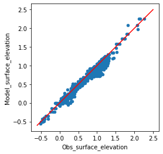

import pandas as pd
import numpy as np
import matplotlib.pyplot as plt
from matplotlib_inline.backend_inline import set_matplotlib_formats
set_matplotlib_formats('png')
import mikeioDfsu - Extract Track
Similar to the MIKE tool DataTrackExtractionFM.exe the Dfsu method extract_track() can be used to extract model data along a track (e.g. satellite altimetry track)
Load dfsu result file
The file contains surface elevation and wind speed model data. We wish to compare the model data with altimetry data
track_file = '../tests/testdata/altimetry_NorthSea_20171027.csv'
data_file = '../tests/testdata/NorthSea_HD_and_windspeed.dfsu'dfs = mikeio.open(data_file)
dfsDfsu2D
number of elements: 958
number of nodes: 570
projection: LONG/LAT
items:
0: Surface elevation <Surface Elevation> (meter)
1: Wind speed <Wind speed> (meter per sec)
time: 67 steps with dt=3600.0s
2017-10-27 00:00:00 -- 2017-10-29 18:00:00Load and visualize altimetry tracks
The altimetry data is stored in a csv file. We plot the data on top of the dfsu mesh.
track = pd.read_csv(track_file, index_col=0, parse_dates=True)track.head()| lon | lat | surface_elevation | significant_wave_height | wind_speed | |
|---|---|---|---|---|---|
| date | |||||
| 2017-10-26 04:37:37 | 8.757272 | 53.926136 | 1.6449 | 0.426 | 6.100000 |
| 2017-10-26 04:37:54 | 8.221631 | 54.948459 | 1.1200 | 1.634 | 9.030000 |
| 2017-10-26 04:37:55 | 8.189390 | 55.008547 | 1.0882 | 1.717 | 9.370000 |
| 2017-10-26 04:37:56 | 8.157065 | 55.068627 | 1.0309 | 1.869 | 9.559999 |
| 2017-10-26 04:37:58 | 8.124656 | 55.128700 | 1.0369 | 1.939 | 9.980000 |
ax = dfs.geometry.plot.mesh(figsize=(8,7))
track.plot.scatter('lon','lat', ax=ax);track_xy = track[['lon','lat']].values
print(f'Inside domain: {sum(dfs.contains(track_xy))} points of the track (total: {len(track_xy)})')Inside domain: 922 points of the track (total: 1115)Extract track data from dfsu file
The extract_track() takes a track definition (time, longitude, latitude of each point) as either a dataframe, a csv-file, a dfs0 file or a mikeio.Dataset.
e_track = dfs.extract_track(track_file)# convert to dataframe and rename columns
df = e_track.to_dataframe()
df.columns = ['Longitude', 'Latitude', 'Model_surface_elevation', 'Model_wind_speed']Compare with the observed altimetry values
df['Obs_surface_elevation'] = track['surface_elevation']
df['Obs_wind_speed'] = track['wind_speed']
df.dropna(inplace=True)resi = df.Model_wind_speed - df.Obs_wind_speed
bias = resi.median()
rmse = np.sqrt(np.mean(resi**2))
print(f'Wind speed: bias={bias:.2f}m/s, rmse={rmse:.2f}m/s')Wind speed: bias=0.68m/s, rmse=2.05m/sdf.plot.scatter('Obs_wind_speed','Model_wind_speed')
plt.plot([0,25],[0,25], color='r')
plt.gca().set_aspect('equal')resi = df.Model_surface_elevation - df.Obs_surface_elevation
bias = resi.median()
rmse = np.sqrt(np.mean(resi**2))
print(f'Surface elevation: bias={100*bias:.2f}cm, rmse={100*rmse:.2f}cm')Surface elevation: bias=-6.34cm, rmse=11.50cmdf.plot.scatter('Obs_surface_elevation','Model_surface_elevation')
plt.plot([-0.6,2.5],[-0.6,2.5], color='r')
plt.gca().set_aspect('equal')